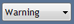
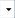

The CCS Messaging System is used to exchange messages between proDAS and the CCS (client-supplied). This allows CCS users to notify proDAS users if there is a problem with any of the recording files being transferred to the CCS, and for proDAS users to notify CCS users of any issues from proDAS. Messages from CCS are placed in a shared folder and automatically displayed in the message viewer in proDAS. The message viewer provides a GUI for proDAS users to view messages from and send messages to the CCS.
When messages are created in the message viewer (proDAS), a message file is created and automatically saved in a shared folder. Each message file is an ASCII text file that contains the following fields:
Messages are sent between proDAS and the CCS automatically when an alarm or a limit occurs in the RTE. When this occurs, the RTE launches the VB Script on the Management GUI PC. The VB Script translates the message using the predefined comments file based on the message ID. The message appears in the message queue in the message viewer.
If the message ID is unknown, the message reads "Message ID X (unknown)".
When a message is received from the CCS, a notification is displayed in the task bar.
The message viewer is the CCS Messaging System GUI that can be used from proDAS.
The top of the screen allows the user to create messages and select the severity of each. When a message is created/received, it is automatically displayed in the message list. The columns in the GUI screen can be rearranged into different orders, and each column can be sorted according to the data within.
By default, messages are displayed in reverse chronological order.
Messages can be filtered based on the current test by pressing CTRL+F.
The following table describes the different sections of the GUI:
| Section | Description |
|---|---|
| Severity Drop-Down Menu  |
The severity drop-down menu allows the user to select the severity of the message being created. The severity is displayed in the Severity column of the main screen. The options in the severity drop-down menu are:
|
| Message Field | The message field is where the message is entered. Clicking Send sends the message to the CCS.
The message field supports non-English characters. Clicking the drop-down menu to the right of the field () provides a list of pre-defined messages that can be sent. The pre-defined messages are defined in the comment file.The message text can contain keywords in %keyword% format. Keywords are automatically replaced with the requisite information. If the keyword string contains any of the following and proDAS is configured, the keyword is replaced with the matching test information.
|
| Button to send message to CCS and display them in the message viewer. | |
| Arrived Column | The time and date the message arrived in the messaging system. |
| Message Column | The message content. |
| Time Stamp Column | The time the message was created if the message was sent from proDAS to CCS. If the message was created in CCS the time stamp is stored in the message file. |
| Origin Column | The origin of the message (proDAS or CCS). |
| Severity Column | The severity of the message (Warning, Error, or Info). |
| Test Name Column | The name of the test being run while the message was created (if proDAS is configured and scanning). |
Pressing CTRL–O on the keyboard opens the Options panel. The Options panel provides basic customisation of the CCS Messaging System.
The following table describes the different sections of the Options panel:
| Section | Description |
|---|---|
| Send | Provides the option to reset to new information or keep the current information. |
| Message Log Filter [CTRL+F] | Filters the displayed messages based on the current test. Selecting Filter on the current proDAS Test displays only messages from that test. |
| Notifications | Options for message notifications that appear from the task bar when a message is received from CCS. |
| Error Colour | Select the colour to highlight the severity description in the Severity column. |
| Font | Select the font for the text in the message viewer. |
| Delete [CTRL+D] | Delete all messages in the queue. |
| Edit Comment File | Opens the comment file in Notepad for editing.
The format of the comment file is as follows: ID | Severity Level | Message Text ID: An integer number representing the message ID. Severity Level: Warning, Error, or Info Message Text: Text of the message If the file is edited, the CCS Messaging System must be restarted before the changes will take effect. |
| Service Status | The status of the CCS Windows services. |